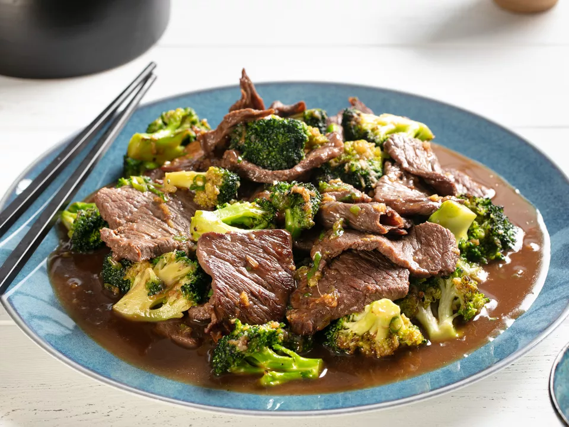

Serious Eats Beef and Broccoli

Description
Beef and Broccoli is a staple asian dish that many people love. Using this recipe,
you'll see how easy it is to bring these amazing flavors into your kitchen!
A wok is definitely not required to make this super tasty beef and broccoli
dish. All you need is a good nonstick pan and some time to savor some delicious
beef and broccoli.
Ingredients
- 1 lb. flank steak, skirt steak, hanger steak, or flap meat, cut into 1/4-inch thick strips
- 1/4 cup soy sauce (divided)
- 1/4 cup shaoxing wine or dry sherry (divided)
- 2 tsp corn starch
- 1/3 cup low-sodium chicken stock
- 1/4 cup oyster sauce
- 1 Tbsp sugar
- 1 tsp sesame seed oil
- 2 medium cloves garlic, finely minced
- 2 tsp finely minced fresh ginger
- 3 scallions, whites finely sliced, greens cut into 1/2-inch segments, reserved separately
- 4 tablespoons vegetable, peanut, or canola oil
- 1 lb. broccoli florets
Steps
- Combine beef, 1 tablespoon soy sauce, and 1 tablespoon shaoxing wine in a bowl and
toss to coat. Place in refrigerator and let marinate for at least 20 minutes at room
temperature and up to 3 hours.
- Meanwhile, combine remaining soy sauce with corn starch and stir with a fork to form
a slurry. Add remaining shaoxing wine, chicken stock, oyster sauce, sugar, and
sesame oil. Set aside. Combine garlic, ginger, and scallion whites in a bowl and set
aside.
- When ready to cook, heat 1 tablespoon oil in a wok over high
heat until smoking. Add half of beef and cook without moving until well seared, about
1 minute. Continue cooking while stirring and tossing until lightly cooked but still pink
in spots, about 1 minute. Transfer to a large bowl. Repeat with 1 more tablespoon of
oil and remaining beef, adding beef to the same bowl. Wipe out wok.
- Add 1 more tablespoon oil to wok and heat over high heat until smoking. Add half of
broccoli. Transfer to bowl with beef. Repeat with remaining oil and remaining broccoli.
Return wok to high heat until smoking. Return beef and broccoli to wok and add
garlic/ginger/scallion mixture. Cook, tossing and stirring until fragrant, about 30
seconds. Add sauce and scallion greens and cook, tossing and stirring constantly
until lightly thickened, about 45 seconds longer. Carefully transfer to a serving platter
and serve.
check out the original recipe here